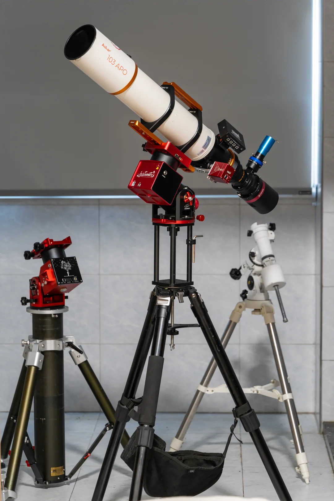
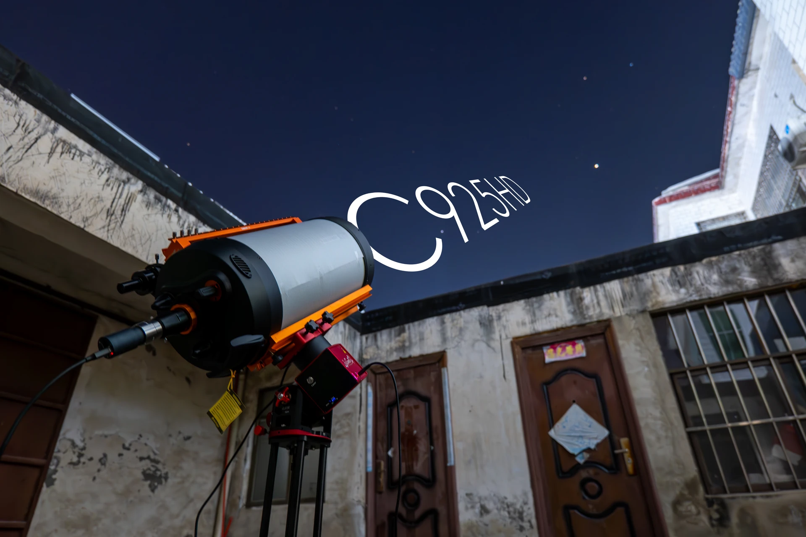
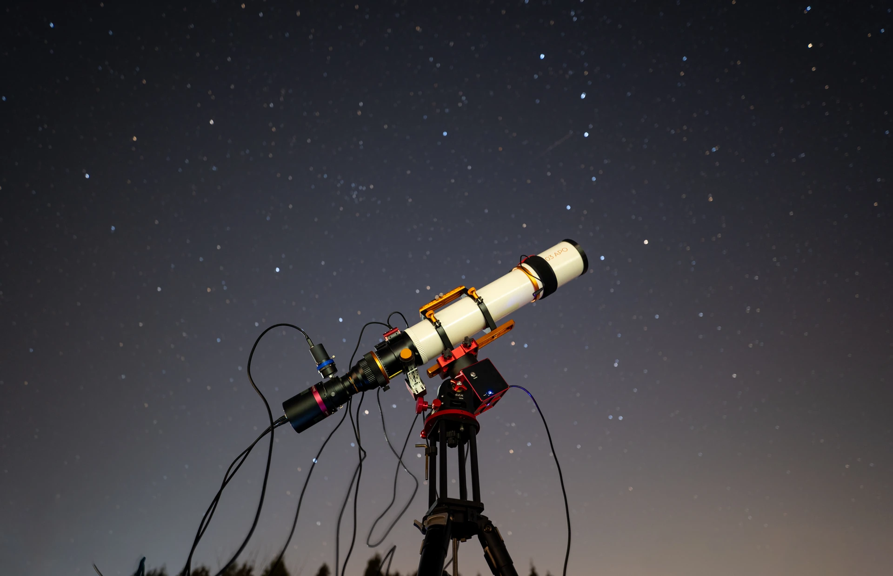
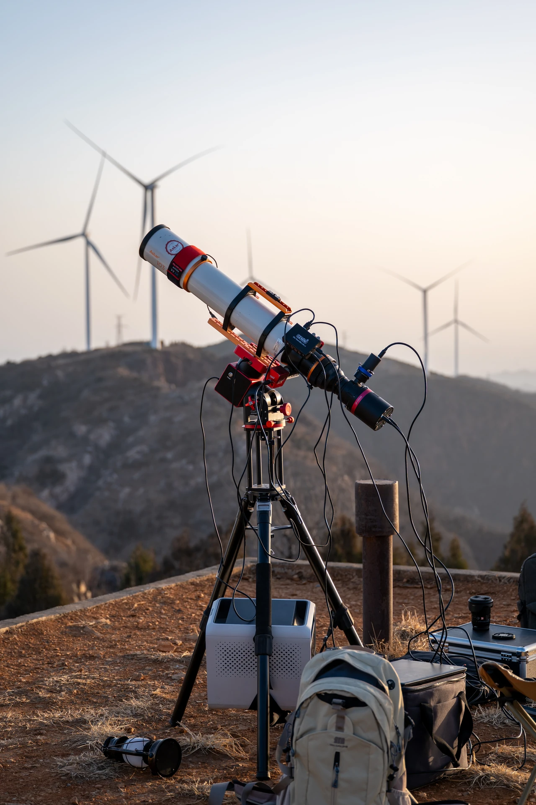

PHOTOGRAPHY / 117 OBSERVATIONS
摄影作品
117 PHOTOGRAPHS全部 / 117
MOTION / 00:06
动态影像
DECLASSIFIED
可公开的情报




01 / 04
EQUIPMENT
设备
- 主镜
- 锐星 103APO / 星特朗 C925HD
- 相机
- QHY 268C
- 赤道仪
- 晴空 ST20R
- 导星
- QHY OAG-M PRO / 图谱 290C
- 滤镜
- 宇隆 L-eXtreme / 锐星 D2 / XIMEI 红外截止
- 相机
- 松下 S5M2 / 海鸥 4A / 宾得 K100D
- 镜头
- 松下 70-300 / 松下 20-60 / 松下 50mm F1.8 / 唯卓仕 16mm F1.8
- 其他
- DJI Mavic 2 Pro / DJI RS3 / Fotopro 脚架